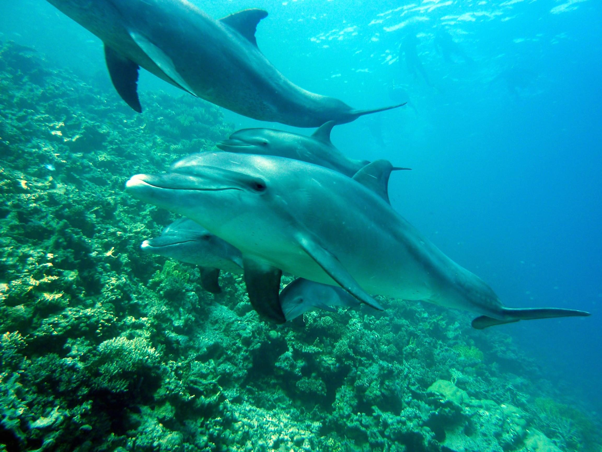
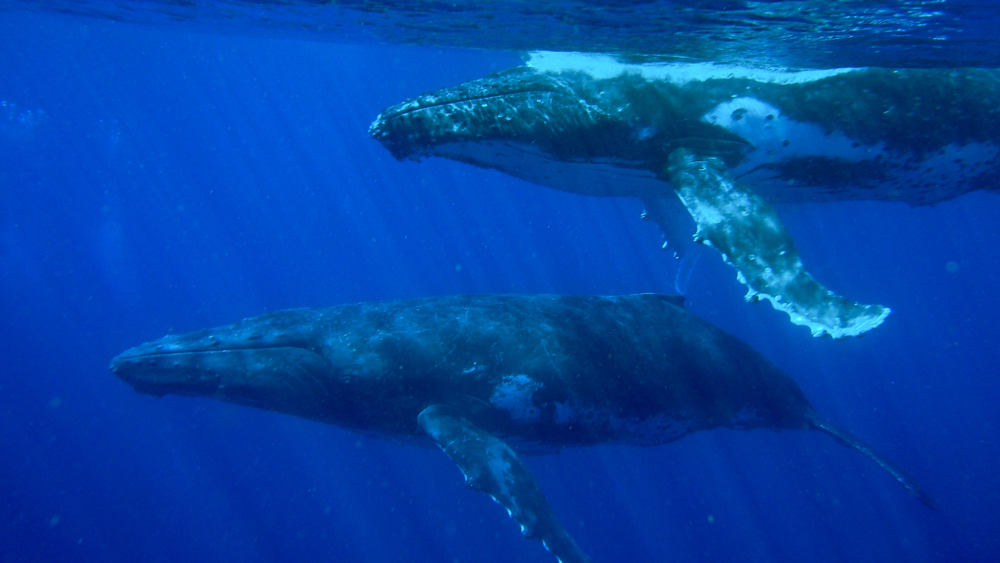
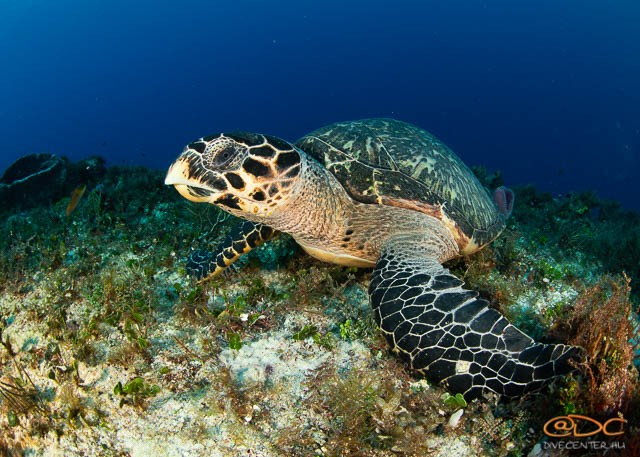

Bolygónk felszínének közel háromnegyed részét tenger borítja. Ez a Föld legnagyobb élettere. A kedvező életfeltételek számtalan élőlény számára nyújtanak élőhelyet. Növények csak a jól átvilágított felszíni rétegekben élnek, míg az állatok a tenger minden szintjét benépesítik.
Állatvilág

Delfin
Nevét különleges formájú, borospalackra emlékeztető szája („csőre”) után kapta, amit az első névadók orrnak néztek.Az állat testhossza a 230-380 centiméter, testtömege 250-500 kilogramm. A hímek nagyobbak, mint a nőstények. Mindegyik állkapocsfélben 20-26 fog ül. Hátúszója hegyesen háromszögletű, láthatóan hátrahajlik. A delfinek visszhang segítségével tájékozódnak (hangnavigáció) - az általuk kibocsátott ultrahang csettintő hangok sorozata a vízben vándorló „hangfalat” képez. Ha ezek a hangok szilárd tárgyba ütköznek, visszhangként verődnek vissza. A visszhangot környezetének pontos hangképeként értelmezi. Így tudja megállapítani zsákmánya nagyságát, elhelyezkedését, haladási irányát és sebességét. A látásuk is éles, viszont a szaglásuk fejletlen. A delfin csoportosan él, társaságkedvelő. Nagyszerű úszó, általában 5–11 km/h-s sebességgel halad, de képes felgyorsulni 35 km/h-ra is.Nem úgy alszanak, mint sok más emlős. Egyes kutatók szerint a két agyféltekéje felváltva pihen és aktív, mások szerint apró, pár másodperces alvási periódusai vannak.Egy delfin átlagosan 6-7 kilogramm tengeri állatot fogyaszt el naponta.Természetes ellenségei a nagyobb cápák és a kardszárnyú delfinek lehetnek. Azonban ritkán válnak zsákmánnyá, sőt a cápákkal szemben sokszor maguk lépnek fel támadólag.Fejlett szociális kapcsolatokon alapuló csoportokban él.A palackorrú delfin és az ember közötti kapcsolat különleges. Rengeteg történet szól delfinek által megmentett hajótöröttekről, különleges barátságokról.

Bálna
A hosszúszárnyú bálna a nagyobb testű barázdásbálna-félék közé tartozik. Az állat hossza általában 13–14 méter, néha 16 méter is lehet. Testtömege legfeljebb 40 tonna, azonban általában csak 25-30 tonna. A hosszúszárnyú bálnának különleges alakú teste van, feltűnően hosszú mellúszókkal; innen ered a magyar neve is. Fején bőrdudorok és bütykök találhatók. Ez a bálnafaj a többi bálnához képest elég gyakran ki-kiugrik a vízből. A hímek hangja bonyolult „énekekből” áll, melyek 6–35 percig tartanak, alkalmanként egyéb hangokat is kiadnak. Az óceánok és tengerek lakója, egy példány évente 25 000 kilométert is képes megtenni. Tápláléka: planktonikus rákok (krill), halak és tintahalak. A déli félteke populációi inkább planktonikus rákokkal táplálkoznak, míg északi fajtársaik halakat fogyasztanak. Mint más nagy testű rokonai, a hosszúszárnyú bálna vadászását is túlzásba vitték a bálnavadászok, melynek következményeként az állomány 90 százalékkal csökkent. A kihalását az 1966-ban bevezetett bálnamoratórium akadályozta meg. Azóta e faj példányszáma növekedésnek indult, de a halászhálókba való gabalyodás, a hajókkal történő ütközés vagy a hajók és tengeralattjárók által kibocsátott hangok – főleg a szonárok – még mindig veszélyeztetik a fajt. Vannak hosszúszárnyú bálnák, amelyek évente 25 000 kilométert tesznek meg vándorlásaik során, emiatt az állatok között a legnagyobb utazók közé tartoznak. 2007-ben hét példány rekordot ért el, amikor egy út során 8300 kilométert tett meg az Antarktisztól Costa Rica csendes-óceáni partjáig. Ez volt a leghosszabb út, amit valaha egy emlős megtett, legalábbis amiről tudni lehet, mivel ezeket a bálnákat figyelemmel kísérték, és a farkukon levő mintázat miatt könnyen felismerték. Orrlyukai fent a fejen találhatók; az orrlyukakból kifújt párafelhő akár 3 méter magasra törhet; a jelenség 2–3 másodpercig tart. Keskeny mellúszói igen hosszúak, erősek és ívelten csipkézettek; teljes testhosszának az egyharmada. A mellúszók mintázata mindegyik egyednél más és más, amivel azonosítani lehet őket.Általában magányosan vagy kis csoportokban jár. A tudósok szerint az állat élettartama 45–100 év között van, de az eddig ismert legidősebb hosszúszárnyú bálna csak 60 évig élt.Hangokat mindkét nem hallat, de csak a hímek énekelnek; énekük hosszabb, hangosabb és bonyolultabb. Érdekesség: „George és Gracie” két hosszúszárnyú bálna, a Star Trek IV: A hazatérés című sci-fi film eseményei folynak körülöttük, de „George és Gracie” nem valódi, hanem kitalált bálnák. A filmben egy óriási idegen szonda érkezik a Földhöz, és különlegesen erős jeleket sugároz. Spock rájön, hogy az idegen szonda a hosszúszárnyú bálnákkal próbál kapcsolatot felvenni. Ezeket az élőlényeket azonban az emberiség három évszázaddal ezelőtt, a vadászatnak köszönhetően kiirtotta, ezért visszamennek a 23. századból 1986-ba, hogy magukkal vigyenek két bálnát, akik alkalmasak a szondával való kommunikációra

Közönséges cserepesteknős
A közönséges cserepesteknős (Eretmochelys imbricata) a hüllők (Reptilia) osztályába, a teknősök (Testudines) rendjébe és a tengeriteknős-félék (Cheloniidae) családjába tartozó Eretmochelys nem egyetlen tagja. A két térítő között, az Atlanti- és a Csendes-óceánban, valamint a hozzájuk tartozó tengerekben él két alfaja: az atlanti területek lakója az E. imbricata imbricata, az indo-csendes-óceáni térségé pedig az E. imbricata bissa. Megjelenése nagyon hasonló a többi tengeri teknőséhez. Lapított, testét teknőspáncél védi, a mellső végtagja viszonylag nagy; egyaránt segít az úszásban és a szárazon haladásban. A többi tengeri teknőstől azért különböztethető meg könnyen, mert a felső állkapcsa horgos, és emiatt a nyakrejtésre is képes fejvégződése csőrszerű. Páncéljának színezete kissé változhat, mivel alkalmazkodik környezetéhez és a víz hőmérsékletéhez. Bár e teknős életének jelentős részét a nyílt óceánban tölti, előfordul a sekély lagúnákban és a korallzátonyok környékén is. A modern halászat, a megváltozott környezet, a környezetszennyezés nagy veszélyt jelent számukra és ezek miatt mára már a kihalás szélére került. Értékes páncéljából különböző használati tárgyakat, például edényeket, szemüvegkeretet, gombot, gitárpengetőt stb. készítenek. Húsának fogyasztása nem javasolt, mert toxikus anyagokat tartalmazhat. Az európaiak étrendjén nem is szerepel, mert hasmenést, hányást okozhat. Él egy olyan hiedelem is, hogy rendszeres fogyasztása keléseket vagy daganatokat idéz elő, bár mindezek ellenére egyes törzsekben mégis rendszeresen eszik. Kínában egy időben az ínyencek kedvence volt, és egyes indián törzsek szerint húsának fogysztása különböző betegségektől megóv. Fogyasztása azonban egyáltalán nem ajánlott: nemcsak azért mert halálos mérgezést is okozott már, hanem azért, mert veszélyeztetettsége miatt – a washingtoni egyezmény (CITES) alapján – befogása és a belőle előállított termékek forgalmazása tilos. A közönséges cserepesteknős megjelenését tekintve a tengeriteknős-félékhez hasonlít. Közeli rokonaival megegyezően a hátpáncél lemezei többé-kevésbé cserépszerűen egymáshoz illeszkednek. A mellső úszóján két karom van, és ez a testéhez mérten nagyméretű végtag úszóként funkcionál. Mellső végtagjai jóval hosszabbak, mint a hátulsók, az ujjízeken nincsenek ízületei, és – fejével ellentétben – a mellső végtagjait csak tökéletlenül tudja teknőjébe húzni. A közönséges cserepesteknős homokban hagyott nyoma aszimmetrikus, mivel váltakozva is mozgathatja végtagjait, míg ezzel szemben a közönséges levesteknős és a kérgesteknős szimmetrikusan mozgatja azokat.